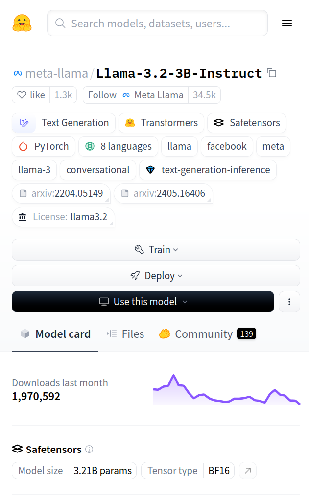
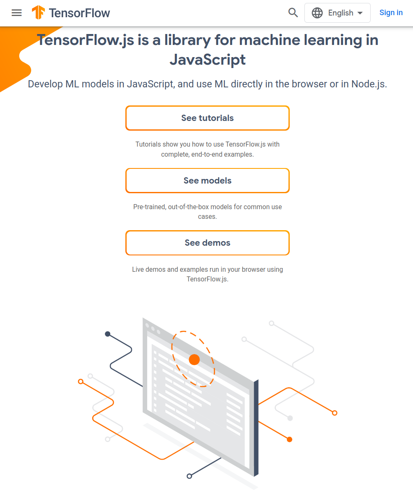

# Download the TensorFlow Serving Docker imageodocker pull tensorflow/serving# Start TensorFlow Serving container and open the REST API portdocker run -t--rm-p 8501:8501 \-v"my_saved_model:/models/my_saved_model"\-e MODEL_NAME=my_model \ tensorflow/serving &# Query the model using the predict APIcurl-d'{"instances": [1.0, 2.0, 5.0]}'\-X POST http://localhost:8501/v1/models/my_model:predict# Returns => { "predictions": [2.5, 3.0, 4.5] }
Things to consider:
Inference + network roundtrip typically takes > 0.5 s
Although request can be encrypted, data must be decrypted on the remote server
Deploying a model as a REST API
For serving LLMs, JSON elements can differ per model, but typically looks like
curl-X POST "http://localhost:8000/v1/chat/completions"\-H"Content-Type: application/json"\--data'{ "model": "meta-llama/Llama-3.2-3B-Instruct", "messages": [ { "role": "user", "content": "What is the capital of France?" } ] }'

Deploying on a (specific) device
For low-latency applications, the model typically resides on the same device that reads directly from sensor/instrument
This comes with specific requirements:
Low memory
Low compute capacity
Low power
Specific runtime environment
Deploying on a (specific) device
Can still develop and train on regular hardware, and then optimise the model for the target device
Preferred way to run Keras models is through Lite Runtime (LiteRT)*, which supports
Android / iOS
Embedded Linux
Various microcontrollers
Converts and optimises Keras (or other) models to run in any of the above environments
*Used to be called TensorFlow Lite
Very low-latency DL
If you want a small-ish model to be really fast, run it to a Field-Programmable Gate Array (FPGA)
Inference times down to between \(\small 10^{-9}\) – \(\small 10^{-6}\) s (depending on models size)
Tools like hls4ml can do the high-level synthesis of Keras models into hardware-specific language
Deploying locally in browser or app
A good midway between the two previous options: Implement in browser
TensorFlow.js provides JavaScript interface to run Keras models (with WebGPU acceleration)
Ideal if:
Model is not too big
Model does not have to be kept secret
User data should stay on the users device
You don’t want to pay for a compute server

Optimisation
When your models is developed and ready to be deployed, it pays off to optimise it
Minimise computing cost and memory footprint by:
Pruning
Weight quantisation
Weight sharing / clustering
This is implemented in LiteRT (and in other tools too)